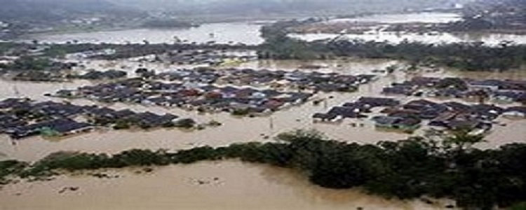
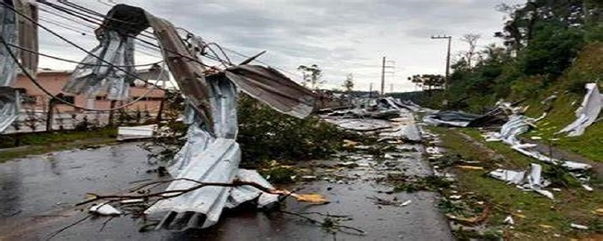
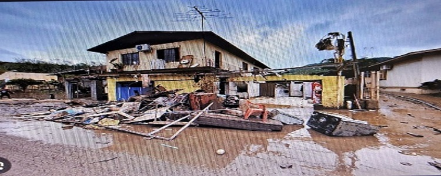
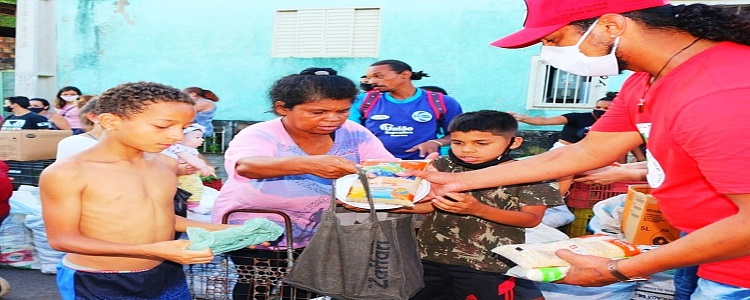
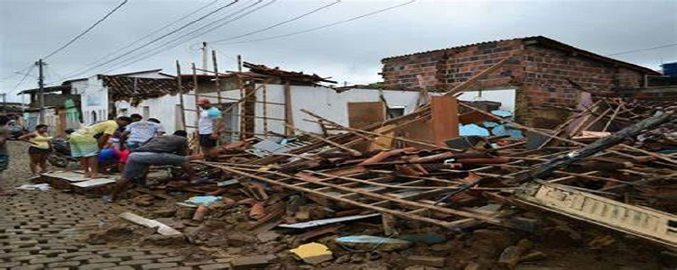
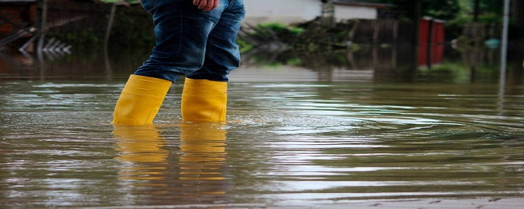
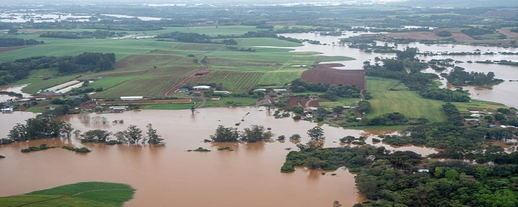

Rafael:
Enchente no Rio Grande do Sul de 2023: Uma Tragédia que Marcou Vidas
esse eventos trágicos que assolaram o nosso amado estado do Rio Grande do Sul no ano de 2023. As fortes chuvas que se abateram sobre nossas cidades causaram uma das piores enchentes da história recente, deixando um rastro de destruição e sofrimento.

Luis Pedro:
O Desastre Natural
Durante o período de 24 de abril a 4 de maio, o Rio Grande do Sul recebeu uma quantidade de chuva que corresponde a cerca de um quarto do volume esperado para um ano inteiro. As águas transbordaram rios, inundaram ruas e invadiram casas, pegando todos de surpresa. Cidades como Aceguá, Alegrete, Cachoeira do Sul e Caxias do Sul foram severamente afetadas. Famílias inteiras tiveram que abandonar suas residências, buscando abrigo em escolas, ginásios e igrejas.

Pitter:
Impacto Humano e Material
As perdas humanas foram significativas. Registramos 55 mortes diretamente relacionadas às enchentes, além de 74 pessoas desaparecidas e 107 feridas. A Defesa Civil estima que 82,5 mil pessoas estão fora de casa, sendo 13,3 mil em abrigos e 69,2 mil desalojadas, que recebem abrigo nas casas de familiares ou amigos. Esses números nos lembram da fragilidade da vida e da importância de estarmos preparados para enfrentar desastres naturais.
Em termos materiais, a infraestrutura também sofreu danos significativos. Estradas foram destruídas, pontes caíram e redes de energia elétrica foram interrompidas. Seis barragens em diferentes regiões do estado entraram em estado de emergência, aumentando ainda mais a preocupação das autoridades.

Régis:
Solidariedade e Esperança
Apesar da tragédia, vimos o melhor da nossa gente. Voluntários se mobilizaram para ajudar as vítimas, distribuindo alimentos, roupas e oferecendo apoio emocional. Cartas de encorajamento e mensagens de esperança foram enviadas de diferentes cidades, mostrando que, mesmo diante da adversidade, estamos unidos.

Isa:
Lição Aprendida
A enchente de 2023 no Rio Grande do Sul permanecerá como um marco triste em nossa história, mas também como um chamado à ação. Precisamos investir em medidas de prevenção, planejamento urbano e educação ambiental. Devemos cuidar do nosso planeta e uns dos outros, para que possamos enfrentar futuros desafios com mais resiliência.
Com esperança de dias melhores

Bruno:
Formas de Previnir que echentes voltem
1.Drenagem eficiente: Construir e manter sistemas de drenagem adequados para escoar a água das chuvas.
2.Evitar áreas de risco: Não construir em locais suscetíveis a enchentes.
3.Reflorestamento nas margens dos rios: Plantar árvores nativas para proteger contra erosão e absorver água.
4.Reduzir poluição e lixo: Manter as vias públicas limpas para facilitar o escoamento da água.
5.Planejamento urbano consciente: Considerar riscos de enchentes ao planejar o crescimento das cidades.

Filippe:
Impactos na Agricultura
1.Perdas Agrícolas e Animais:
°As chuvas intensas e as inundações resultaram na perda de plantações de arroz, soja, trigo, milho e frutas.
°Animais também foram afetados, muitos deles desabrigados ou mortos durante as enchentes.
2.Distribuição de Alimentos para Atingidos:
°O Movimento dos Trabalhadores Rurais Sem Terra (MST) estabeleceu a Cozinha Solidária em Encantado, distribuindo mais de 10 mil marmitas para as comunidades afetadas.
°O governo iniciou a distribuição de 52 mil cestas de alimentos contendo itens essenciais como arroz, feijão, leite em pó, óleo de soja e outros.
3.Impacto nos Preços dos Alimentos:
°As enchentes podem causar uma “inflação da tragédia”, elevando os preços devido à escassez de produtos e dificuldades na produção e distribuição.